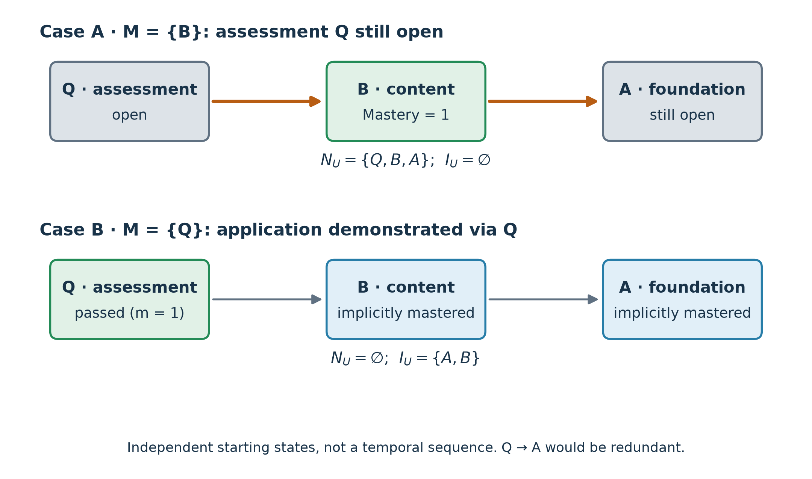
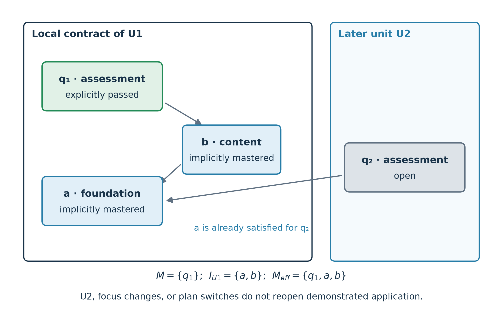
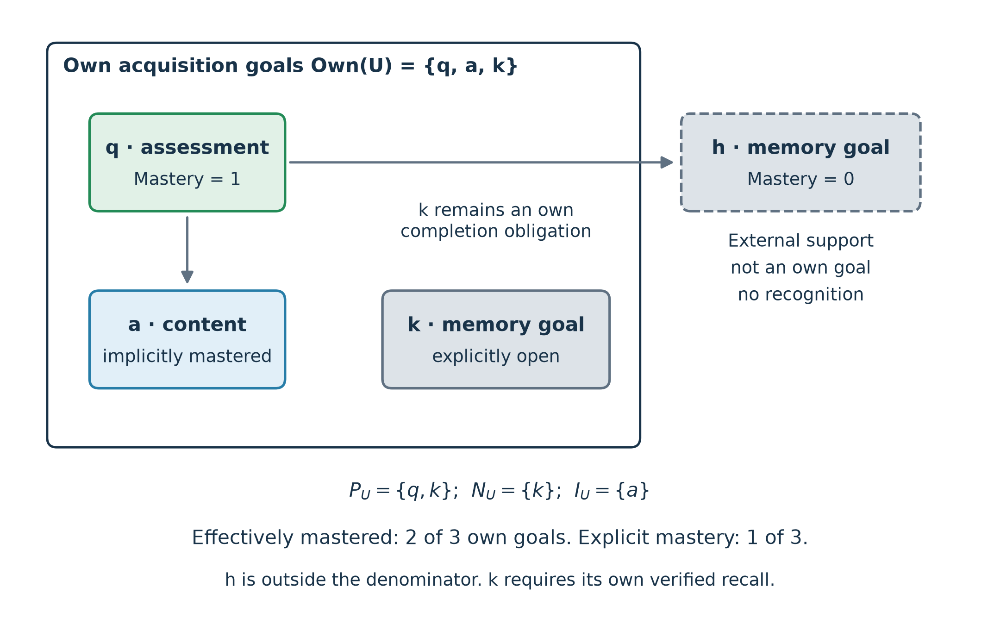
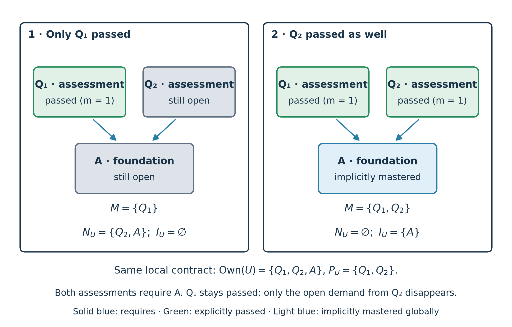
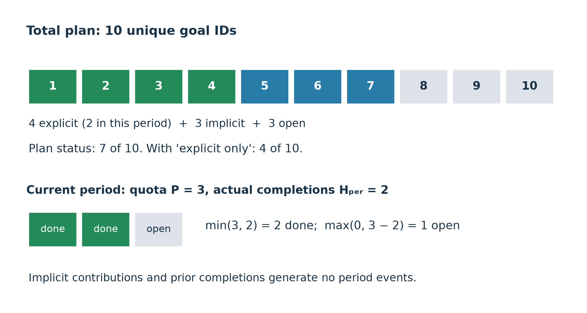

Assessment-Gated Completion and Implicit Mastery (§13)
Generated artifact. Do not edit manually.
Generated by:
docs/concept/skill-graph/build_spec.pyRegenerate with:cd app && npm run docs:skill-graph:webSource of truth:docs/concept/skill-graph/source/
Language / Sprache: English (EN) · Deutsch (DE) | PDF: English PDF · Deutsches PDF
Compendium: §§1–5 Core · §§6–10 Context · §§11.1–11.4 Units · §11.5 Progression · §12 Planning · §13 Implicit Mastery · Appendices B–F · Appendix A (Rules & Ampel)
13. Implicit Mastery Through Valid Local Assessments
Binding Concept Revision of 4 November 2026
An explicit pass on a content goal establishes understanding. Passing a valid local assessment can establish independent application of the underlying competencies. That implicit mastery carries equal global weight: it satisfies subsequent prerequisites and counts toward cumulative attainment. Assessment and memory goals themselves remain strictly explicit.
Consider a learning unit containing the chain \(\nd{Q} \to \nd{B} \to \nd{A}\): assessment goal \(\nd{Q}\) requires content goal \(\nd{B}\), and \(\nd{B}\) requires \(\nd{A}\). As long as \(\nd{Q}\) remains open, the assessment still demands its prerequisites \(\nd{B}\) and \(\nd{A}\). Once the learner passes \(\nd{Q}\) under a valid local contract of that unit, both \(\nd{B}\) and \(\nd{A}\) count as independently applied – and hence implicitly mastered – even without separate explicit results of their own. The subsections below formalize that set equation and state the domain conditions required before evaluating it.
The Product Owner confirmed this recognition rule on 11 November 2026: an own ordinary goal is recognized once no open own assessment or memory goal of its unit still requires it. If assessments \(\nd{Q_1}\) and \(\nd{Q_2}\) belong to the same unit and both require \(\nd{A}\), then \(\nd{A}\) stays open after \(\nd{Q_1}\) is passed until \(\nd{Q_2}\) is passed as well (Figure 15); explicit mastery of \(\nd{A}\) remains possible at any time. The rule is sound only inside units that satisfy the validity conditions of Section 13.3.
The stored binary value \(m\) remains the sole persisted outcome per goal. This specification derives additional satisfaction without writing mastery backward, adding extra qualification records, introducing manual waiver masks, or requiring second partial exams. On main, this concept is not yet implemented; the current concept specification is authoritative.
13.1. Local Contract, Target Scope, and Protected Goal Types
Local contract.
A local contract belongs to an authoritative learning unit \(U\) from Section 11. It binds \(U\)'s own acquisition targets \(\Own(U)\), their canonical identities, the curriculum revision, and the domain-reviewed meaning of \(U\)'s own assessments; adjacent documents also call it a local recognition or acquisition contract. Total scope \(T(U)\) additionally aggregates child-unit targets, yet \(T(U)\) is never an enlarged substitute recognition scope for the parent unit, and a subsequent parent integration claim never retroactively widens child contracts. Neither a display filter nor a temporary focus nor the currently selected plan roots redefines that ownership. Section 11.2 names the fields that carry these parts.
Protected goals.
Let \(Q \subseteq A\) denote the authoritatively classified assessment goals and \(A_{\mathrm{mem}} \subseteq A\) the memory goals, while \(K = G \setminus A\) remains the set of structural clusters. A unit's own protected goals are
\(P_U\) protects all own assessment and memory goals from implicit completion: passing another assessment substitutes neither for an assessment's own pass nor for verified recall of required flashcards. Orientation remains a distinct motivational goal type rather than a third protected class: an orientation marker may enter \(I_U\) as a derivatively closed entry anchor without certifying domain competence or asserting that a motivational dialogue actually took place. Outside support beyond \(T(U)\) never enlarges the completion denominator, and competencies outside \(\Own(U)\) receive no implicit recognition from \(U\)'s own contract – child targets are governed by their respective child contracts. The remaining own goals – content goals and any orientation goals – are called unprotected below.
Underlying relation.
All formulas below evaluate the fully inherited and atomically expanded prerequisite relation \(\Rat\) from Section 2.3, including hidden and cross-subject support. Every reference must resolve and the normalized relation must be acyclic; full prerequisite closure is evaluated prior to any display restriction.
13.2. Transitive Open Demand and Implicit Set
For any subset \(X \subseteq A\), let \(\operatorname{Reach}_{\Rat}^{*}(X)\) denote \(X\) itself together with every atom directly or transitively required by an element of \(X\):
Given global explicit mastery \(M = \{a \mid m(a) = 1\}\), define
Here \(N_U\) is open demand – the still-open protected goals of \(U\) together with their full atomic prerequisite demand – and \(I_U\) is the implicit set. An own goal belongs to \(I_U\) if and only if it is
- not already explicitly mastered,
- not protected, and
- no longer required by any open protected goal of the unit.
Reflexive reachability retains the open roots themselves together with all of their transitive prerequisites: traversal never stops at an explicitly mastered intermediate goal or at the boundary of \(\Own(U)\). Consequently, \(I_U\) remains invariant whenever a redundant shortcut edge is added or removed for required transitive minimality, and \(I_U \cap M = \varnothing\) as well as \(I_U \cap P_U = \varnothing\) hold unconditionally.
Figure 12 works through both starting states of \(\nd{Q} \to \nd{B} \to \nd{A}\) with \(\Own(U) = \{\nd{Q}, \nd{B}, \nd{A}\}\) and \(P_U = \{\nd{Q}\}\). In Case A, only \(\nd{B}\) is explicitly mastered; open assessment \(\nd{Q}\) continues to demand both \(\nd{B}\) and \(\nd{A}\), yielding \(N_U = \{\nd{Q}, \nd{B}, \nd{A}\}\) and \(I_U = \varnothing\). In Case B, \(\nd{Q}\) is passed, leaving no open protected goal: \(N_U = \varnothing\) and \(I_U = \{\nd{A}, \nd{B}\}\).

Figure 12 — Transitive demand across an explicitly mastered intermediate goal: Two independent starting states for \(\nd{Q}\to\nd{B}\to\nd{A}\): with \(M=\{\nd{B}\}\), \(\nd{A}\) remains open; with \(M=\{\nd{Q}\}\), \(\nd{Q}\) carries implicit application of \(\nd{A}\) and \(\nd{B}\). This is not a temporal sequence: an already explicitly mastered \(\nd{B}\) would stay in \(M\) when \(\nd{Q}\) is passed later. A direct edge \(\nd{Q}\to\nd{A}\) would be redundant.
Complexity.
Let \(V_U^{\mathrm{reach}} = \operatorname{Reach}_{\Rat}^{*}(P_U \setminus M)\) denote the reachable atomic nodes and \(E_U^{\mathrm{reach}} = \{(a, b) \in \Rat \mid a \in V_U^{\mathrm{reach}}\}\) their outgoing prerequisite edges. Direct graph traversal visits each such node and edge at most once, computing \(I_U\) across \(\Own(U)\) in \(O(|\Own(U)| + |V_U^{\mathrm{reach}}| + |E_U^{\mathrm{reach}}|)\) steps – and globally in at most \(O(|A| + |\Rat|)\) – without materializing a quadratic transitive closure.
13.3. Why the Skill Graph Alone Does Not Prove Application
The set equations above may be evaluated only for a valid domain contract. The Product Owner decision of 11 November 2026 states its conditions as five rules and fixes where each is enforced (Table 7): the recognition rule is sound only if units satisfy them as hard rules.
Table 7: Validity conditions of a learning unit and where they are enforced (Product Owner decision of 11 November 2026). For learning units authored in the canonical landscapes, a validator checks R1, R3, and the uniqueness part of R4; R2 and R5 are not yet enforced.
| Rule | Requirement | Placement |
|---|---|---|
| R1 | Every own ordinary content goal lies on a prerequisite path from at least one own assessment of the unit, directly or transitively; a path that leads only to a memory goal does not count. | Validity condition of the unit definition, in the same class as acyclicity: hard from the first authored unit; a violating unit cannot be merged. |
| R2 | For every own ordinary goal, at least one own assessment that requires it has reviewed evidence that its tasks and normal grading really test the goal. | Milestone M5 (assessment approval and coverage metadata), with the current per-goal binding at M7; without it the curriculum does not reach the milestone. |
| R3 | An assessment claims coverage only for goals it requires directly or transitively: \(\operatorname{Cov}(q)\subseteq\{b\in A\mid(q,b)\in\Rat^+\}\). | As R1. |
| R4 | Every acquisition target has exactly one directly owning unit. | As R1. |
| R5 | A later re-cut of units or later edges never grant additional recognition to existing results; the contract is versioned. | Runtime contract; precondition before implicit recognition is enabled in production. |
Structural conditions (R1, R3, R4).
Every content goal in \(\Own(U)\) must lie on a local prerequisite path from at least one local assessment in \(Q_U\): an own assessment of the unit must require it directly or transitively (R1). A path leading only to a memory goal never suffices, because verified card recall does not prove independent application. An isolated terminal content goal without a local assessment consumer is a contract defect rather than zero-work mastery; lacking a downstream consumer never proves competence. No ad-hoc mask of “recognition-eligible” subgoals exists – the formula governs the entire valid local contract.
Let \(\operatorname{Cov}(q)\) denote the goals whose independent application an assessment \(q\) claims to test according to its reviewed coverage claim. R3 requires \(q\) to require each of them directly or transitively. This guarantees that the assessment which actually tests a goal is among the open protected goals the recognition rule waits for: while an own assessment \(q\) is open, every own goal in \(\operatorname{Cov}(q)\) stays in \(N_U\). A missing path is a finding for subject review, not a reason to add a redundant direct edge. R4 makes the contract well defined: a goal with no or with several directly owning units belongs to no valid local contract.
Content condition (R2).
For every own ordinary goal, at least one own assessment that requires it must carry reviewed evidence that its authored tasks and normal grading rubric genuinely require independent application of that competence (R2), without reinterpreting an orientation marker as an assessable domain competence. Essential competencies must not be wholly omitted while still allowing unrelated points elsewhere to cross the passing threshold. Neither a local requires path nor a title, coveredGoalIds array, passing threshold, or formal DAG check proves that property: independent domain review inspects tasks, model solutions, rubrics, and claimed application coverage jointly across every passing assessment combination that releases a target under the set formula – checking only the union of all assessments never suffices.
No second status.
Passing an assessment remains the single ordinary binary pass of that assessment goal. Stronger application meaning resides in the pre-reviewed local contract rather than in an extra per-learner qualification field or a second follow-up exam, and a legacy assessment lacking that review never acquires expanded meaning retroactively from a new diagram or software update.
Consequence.
Implicit recognition exists only inside units whose contract satisfies R1–R4 with reviewed coverage. Otherwise the unit's own ordinary goals stay open – they can still be mastered explicitly – and the violation keeps the curriculum from reaching the respective milestone (Table 7). A goal that no assessment covers therefore stays open and is a rule violation; it is never recognized for free. Section 13.4 treats R5.
Current enforcement.
Learning units are declared in the placement layer of their skill landscape (Section 11.2); reviewed coverage of own assessments is the unit's coverageReviews. For the canonical Gymnasium landscapes, validate:learning-units (validateLearningUnits.ts) runs in the required curriculum CI. It reads goal kinds, prerequisites, and coveredGoalIds from the landscape and rejects a unit fail-closed when it violates R1 or R3, when two units own the same goal (uniqueness part of R4), or when its declaration, own goals, total scope, or unit hierarchy are malformed. The completeness part of R4 – every acquisition target has an owning unit – applies only to a landscape that declares learningUnitCoverage as complete; none does yet. R2 is not a condition of structural validity: the validator checks claimed coverage reviews against the current tasks and rubrics and reports the goals that still lack one, but no M5 or M7 gate consumes this. R5 and implicit recognition at runtime are not yet implemented on main. A reference evaluation of the set equations (learningUnitRecognition.ts) checks them in required CI against the same shared conformance cases.
13.4. Global Effectiveness and Durable Contract Binding
Let \(\mathcal U_{\mathrm{valid}}\) denote the authoritative local contracts durably bound to this learner at their applicable revisions – rather than arbitrary visited views or all latest content revisions:
That union is not restricted to currently displayed learning units or the active Personal Curriculum view: contract identity, revision, and evidential meaning must remain evaluable across scope changes. Derivation always runs directly from explicit outcomes \(M\) and valid contracts without feeding previously derived implicit sets back as explicit mastery inputs.
A later learning unit \(\nd{U2}\) carrying another assessment \(\nd{q_2}\) must never reopen an application competence \(\nd{a}\) already established under \(\nd{U1}\) (Figure 13); instead, \(\nd{a}\) satisfies \(\nd{q_2}\)'s prerequisite. Under a fixed contract set, adding explicit mastery can only enlarge \(\Meff\): open protected roots shrink, their transitive demand contracts, and any newly explicitly mastered goal leaving \(I_U\) stays inside \(\Meff\) via \(M\).

Figure 13 — Local recognition remains globally effective for later learning units: \(\nd{U1}\) recognizes \(\nd{a}\) and \(\nd{b}\) under its own valid contract. The open later assessment \(\nd{q_2}\) does not block that recognition. Switching focus or plans does not erase the still-evaluable contract of \(\nd{U1}\).
A stable assessment goal ID binds a stable recognition meaning, and equivalent task variants must uphold that same qualified contract. Expanded recognition claims must never silently upgrade legacy exam passes: they require either a new assessment identity or an explicitly reviewed meaning-preserving migration, without adding per-learner qualification records. Whenever historical evidential meaning is unresolved, the explicit pass stands without fabricating broader application recognition, and genuine score or content corrections remain distinct from ordinary downstream consumer or plan switches.
Under rule R5, a later re-cut of units or later edges never grant additional recognition to existing results; the contract is versioned. This runtime contract is a precondition before implicit recognition is enabled in production.
13.5. Protected Goals and Full Unit Completion
Recognition is not yet full completion.
Full unit completion follows recursively from Equation (10): all own goals must be satisfied and every required child unit must be complete. Given global \(\Meff\), that condition coincides with \(T(U) \subseteq \Meff\) provided every required child obligation is represented inside \(T(U)\), and full completion always entails \(P_U \subseteq M\) on own protected goals.
Once every own assessment and memory goal of \(U\) is passed, \(N_U = \varnothing\), allowing \(U\)'s valid local contract to complete its own unprotected goals. Completion of required child units never follows from that fact alone: a parent synthesis assessment may stay open while child content competencies are already globally recognized, and conversely passing the parent synthesis never satisfies an open child assessment or memory obligation.
Open protected goals in the same contract.
An open own memory goal blocks full unit completion without blocking implicit recognition of another own content goal that it does not transitively require (Figure 14). Whenever an open memory goal does require a content goal directly or transitively, however, that content goal stays in open demand. Likewise, when multiple assessments inside the same local contract share a common foundation, all of them must be passed before that foundation leaves open demand.

Figure 14 — Protected memory goals and external support: Assessment \(\nd{q}\) is explicitly passed and carries application of \(\nd{a}\). The independent memory goal \(\nd{k}\) remains open and blocks full unit completion. External support \(\nd{h}\) outside \(\Own(U)\) receives no recognition.
That rule distinguishes multiple assessments inside the same local contract from a subsequent assessment in another learning unit (Figure 13). Figure 15 traces two successive passes at unchanged local scope without further protected obligations.

Figure 15 — Two local assessments sharing a common foundation: \(\nd{Q_1}\) and \(\nd{Q_2}\) both require \(\nd{A}\) in the same valid local contract. After \(\nd{Q_1}\) alone, \(\nd{A}\) stays in open demand because \(\nd{Q_2}\) is still open. Only after both assessments are passed does \(\nd{A}\) become implicitly mastered globally. The explicit pass of \(\nd{Q_1}\) is preserved; there are no further protected goals here.
Comparing that case with Figure 13 presupposes domain-justified, independently valid local contracts: an open assessment in a later unit never revokes recognition already established in an earlier unit, whereas inside a single contract the entire remaining open demand applies. Nothing here licenses splitting or rearranging assessments or units merely to engineer a desired calculation result.
Assessment access.
Existing direct assessment access remains the baseline of the current learner workflow, subject to task availability, authentication, session ownership, and explicit learner selection. Whether optional gated profiles later impose hard unit locks – and how deliberate direct assessment attempts behave under them – remains undecided (Section 11); recursive unit definitions introduce neither a hidden lock nor an unreviewed bypass. Ordinary prerequisite evaluation uses \(\Meff\) over the transitive effective relation while preserving normal and strict focus semantics.
13.6. Cumulative Attainment and Dated Period Events
For a fixed named plan target set \(T_{\mathrm{Plan}}\), cumulative plan attainment counts the effectively mastered goals of the plan:
Forming the union \(\Meff\) prior to intersecting with \(T_{\mathrm{Plan}}\) prevents double-counting across explicit outcomes, implicit sets, and overlapping contracts; any dedicated explicit-only view must label its distinct counter clearly.
By contrast, an active schedule period counts solely dated explicit completion events under its event contract: newly derived application recognition, prior mastery brought into the course, or a widened plan display never fabricates an extra dated completion event inside the current period (Figure 16).

Figure 16 — Total plan progress and dated period completions: Total plan progress and period completions use distinct counters. In the example, 7 of 10 planned goals are effectively mastered (4 explicit and 3 implicit). The current period counts only the 2 dated explicit completions against its quota of 3 goals. The three implicit contributions raise cumulative progress without fabricating dated explicit completion events inside the current period.
The unified learning-plan status contract specifies the user-facing surfaces. Static contract definitions may be cached per revision while derived sets remain computed projections rather than a second stored truth, and invalid or unresolved contracts stay visibly unavailable. Automated checks of these formulas replace neither independent content review nor human learner testing or instructional effectiveness studies.
Sources: Assessment-Gated Completion and Implicit Mastery; Completion Semantics Clarification of 4 November 2026; Unified Learning-Plan Status Contract.